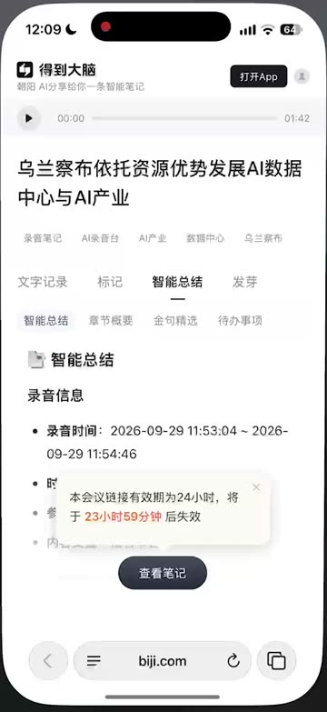
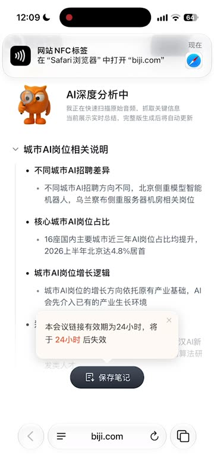
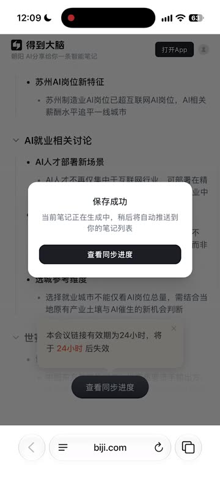
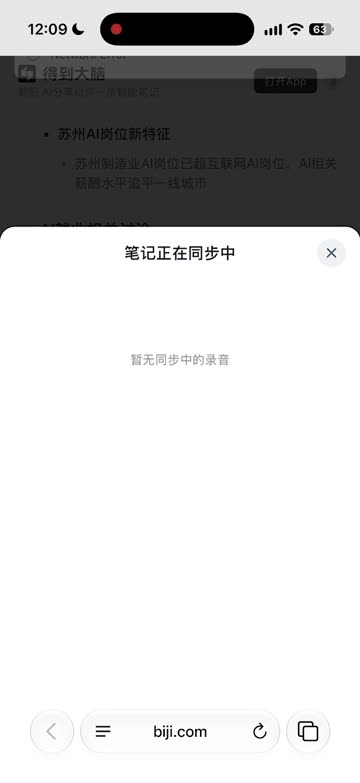
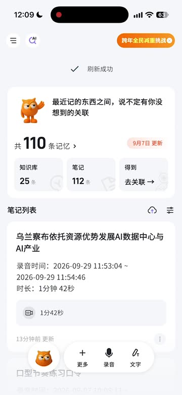
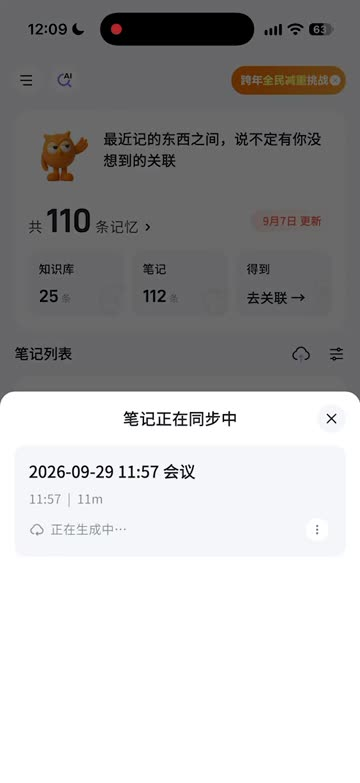

范围：录音台录完后，手机碰一碰 NFC 打开 H5 纪要页 → 保存笔记 → 回到得到大脑 App 查看。本文基于 2026-09-29 的实机录屏（35 秒）梳理问题，给出 H5 与 App 两端的页面呈现、交互逻辑、状态定义和接口要求，开发可按此直接改。
录屏里的实际流程，按时间顺序：






H5 和 App 必须读同一份状态、用同一套文案，否则两边说法对不上（现状就是这样）。服务端给每条会议笔记定义一个 gen_status，两端都按下表呈现：
| gen_status | 含义 | 用户能看到什么 | 状态文案（两端一致） | 进度条 |
|---|---|---|---|---|
uploading | 录音台正在上传音频 | 会议元信息 + 骨架 | 录音上传中 · 约 1 分钟 | 0–15% |
quick_ready | 速览版已生成，深度分析排队中 | 速览版 | 速览版已就绪，完整纪要排队中 | 15–30% |
analyzing | 深度分析中 | 速览版 | AI 深度分析中 · 预计 12:14 完成 | 30–95%，按预计时间平滑推进 |
done | 完整纪要已生成 | 完整纪要（文字记录/智能总结/章节/待办等） | 完整纪要已生成 | 隐藏 |
failed | 生成失败 | 速览版（如有）+ 失败原因 | 生成失败，点击重试（录音已保留） | 隐藏 |
stateDiagram-v2 [*] --> uploading: 录音台结束录音 uploading --> quick_ready: 音频上传完成 + 速览生成 quick_ready --> analyzing: 进入深度分析 analyzing --> done: 生成成功 analyzing --> failed: 生成失败 / 超时 uploading --> failed: 上传失败 failed --> analyzing: 用户点击重试 done --> [*]
布局自上而下：
删除：24 小时失效浮层气泡。
失效提醒升级规则（仅在这些时刻打扰用户）：
加载：首帧直接渲染骨架（会议信息 + 状态卡 + 正文骨架），不展示任何旧内容；对应问题 H5-6。
完整纪要还在生成，预计 12:14 完成。完成后会出现在得到大脑 App 的笔记列表，并发通知提醒你。现在打开 App 也能先看速览版。
交互流程：
删除："查看同步进度"按钮和 H5 内的"笔记正在同步中"面板。H5 页面本身的状态卡就是进度，无需再开一个面板；该面板在 H5 上也拿不到数据（问题 H5-1）。
保存后（仍在生成）：底部栏变为 ✓ 已保存（不可点，弱化）+ 主按钮"在 App 中查看"。状态卡不变，继续显示进度。
轮询：页面可见时每 10 秒请求一次状态；5 分钟后放缓到 30 秒；页面切到后台（visibilitychange）暂停，回到前台立刻请求一次。done / failed 后停止。
完成时：
失败时：状态卡变红"生成失败"，说明"录音已保留，可重试"，按钮"重试"（调重试接口，回到 analyzing）。速览版正文保留。
标题"这条分享已过期"，说明"分享链接 24 小时内有效。如果你保存过，可以在得到大脑 App 的笔记列表里查看"。按钮：已登录且已保存 →"在 App 中查看"；其他 →"打开得到大脑"。不展示正文。
| 场景 | 行为 |
|---|---|
| 已装 App · 已保存 | Universal Link / App Links 打开 dedaobrain://note/{note_id}?from=nfc_share，直达该笔记详情页（生成中也可进）。 |
| 已装 App · 未保存 | 先执行保存（同 3.2 的登录逻辑，App 内以 App 登录态为准），再进详情。深链带 share_id，App 端收到后调用保存接口，成功 toast "已保存到你的笔记"。 |
| 未装 App | 跳下载页；写入延迟深链（剪贴板口令或归因 SDK），首次安装登录后直接进入该笔记并自动保存。 |
| 深链失败（1.5 秒未离开页面） | 底部 toast "未能打开 App，去下载"，不自动跳转商店。 |
位置与排序：生成中（uploading / quick_ready / analyzing）和生成失败的笔记，排在笔记列表最前面；多条时按创建时间倒序。完成后按正常规则排序（它本身是最新的，仍在第一条）。
卡片样式（与普通笔记卡片同尺寸，增加状态信息）：
uploading 阶段显示两条骨架线。点击：进入生成中详情页（4.2）。长按/更多菜单只保留"删除"。
失败卡片：状态胶囊红色"生成失败"，右侧"重试"按钮，点击直接重试，卡片回到分析中。
移除："笔记列表"标题右侧的云朵入口和"笔记正在同步中"面板。录音台本地上传中的录音同样用上述卡片展示（状态 uploading），不再需要单独入口。
刷新：App 回到前台、进入首页时主动拉一次列表；列表中存在生成中卡片时，每 15 秒只拉这几条的状态（轻量接口），全部完成后停止。同时接收推送/长连接事件即时更新。
基于现有笔记详情页，增加生成中状态，效果对齐 H5：
| 字段 | 类型 | 说明 |
|---|---|---|
gen_status | enum | uploading | quick_ready | analyzing | done | failed |
progress | int 0–100 | 按 02 的区间给出；analyzing 阶段按已用时/预计总时长线性推进，封顶 95 |
estimated_finish_at | timestamp | 预计完成时间。初版按录音时长估算（如：60 秒 + 录音时长 × 0.3，按实际数据校准），排队时加上排队时长 |
title / title_source | string / enum | 生成中为 default（"M月D日 HH:mm 会议"），完成后 ai |
record_start_at / record_end_at / duration_sec | timestamp / int | 两端格式化统一：时长 < 1 分钟"23 秒"，< 1 小时"11 分钟"或"1 分 42 秒"，≥ 1 小时"1 小时 05 分" |
device_name | string | 录音台名称，用于"来自录音台 / 会议室 A 录音台" |
quick_summary | markdown | 速览版正文 |
fail_reason | string | 面向用户的失败原因，如"录音过短""音频无法识别" |
share_expire_at | timestamp | 分享链接失效时间，H5 用它计算剩余时长 |
saved_by_viewer | bool | H5 请求时带登录态返回，用于直接展示"已保存" |
GET /share/{share_id}：H5 首屏，返回会议信息 + 状态 + 速览/完整内容 + 有效期。无需登录；带登录态时额外返回 saved_by_viewer 和 note_id。GET /share/{share_id}/status：H5 轮询用轻量接口，仅返回 gen_status / progress / estimated_finish_at / title。POST /share/{share_id}/save：保存，幂等，返回 note_id。保存后的笔记与分享指向同一份生成任务，生成完成两边同时更新，不重复生成。POST /notes/{note_id}/retry：失败重试。GET /notes/status?ids=…：App 列表批量查询生成中笔记状态。| 位置 | 现在 | 改为 |
|---|---|---|
| H5 状态区 | AI深度分析中 / 我正在快速扫描原始音频，抓取关键信息 / 当前展示实时总结，完整版生成后将自动更新 | AI 深度分析中 / 预计 12:14 完成 · 可以先看下方速览版 |
| H5 正文标签 | （无） | 速览版 · 根据实时转写快速整理，完整纪要生成后自动替换 |
| H5 有效期 | 本会议链接有效期为24小时，将于24小时后失效（浮层气泡） | 链接 24 小时内有效（至 9月30日 12:09）· 保存后永久保留（底部灰字） |
| H5 主按钮 | 保存笔记 | 保存到我的笔记 |
| H5 保存成功 | 保存成功 / 当前笔记正在生成中，稍后将自动推送到你的笔记列表 / [查看同步进度] | 已保存到你的笔记 / 完整纪要还在生成，预计 12:14 完成。完成后会出现在得到大脑 App 的笔记列表，并发通知提醒你。现在打开 App 也能先看速览版。/ [打开 App 查看] [留在这里] |
| H5 保存后按钮 | 查看同步进度 | ✓ 已保存 ｜ 在 App 中查看 |
| App 生成中条目 | 2026-09-29 11:57 会议 / 11:57 | 11m / 正在生成中… | 9月29日 11:57 会议 / 录音时间 11:57–12:08 · 时长 11 分钟 · 来自录音台 / ● AI 深度分析中 · 预计 12:14 完成 |
| 接口失败 | Network Error / 暂无同步中的录音 | 加载失败，请检查网络后重试 [重试] |
| 阶段 | 内容 | 端 |
|---|---|---|
| 一期 · 止血 | 修复 H5-1 报错；去掉 24 小时气泡改底部灰字；保存成功弹窗改文案并把按钮改成"打开 App 查看"（先深链到 App 首页）；App 生成中笔记插入列表第一条（先用简版卡片，可点进现有详情页的空态）；"11m"改为"时长 11 分钟" | H5 / App / 服务端 |
| 二期 · 进度可见 | 统一 gen_status 与预计完成时间；H5 状态卡 + 会议信息 + 速览标签 + 完成横幅；App 生成中卡片完整版 + 生成中详情页；深链直达笔记；移除云朵入口 | 全端 |
| 三期 · 闭环 | 完成推送与站内横幅；未装 App 延迟深链；预计时长按历史数据校准；失败重试 | 全端 |